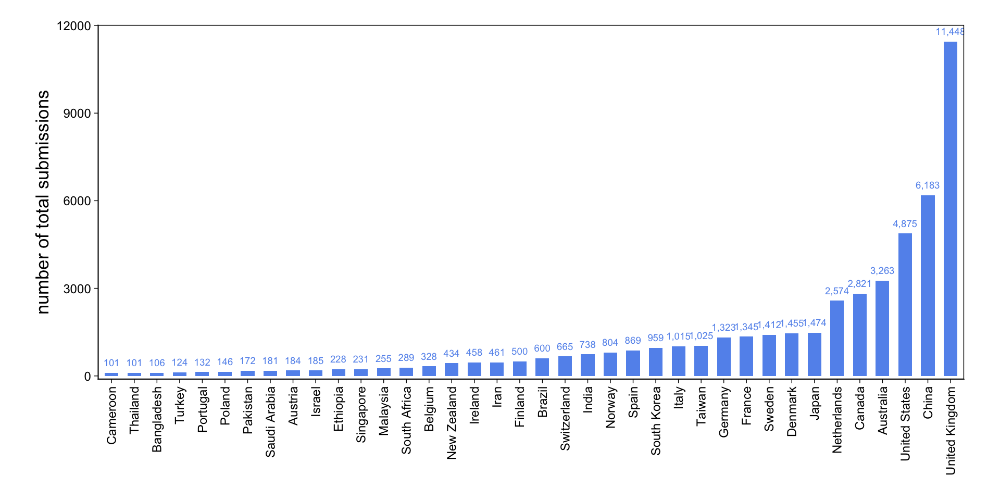

These problems use data from a 2019 publication that reports date and time of submission of papers to the medical journal The BMJ (doi:10.1136/bmj.l6460). There are 6 columns and 49,464 rows. Each row is an article submission. The columns are:
T: The local time of the submission Y: The year of the submission country_name: Country of corresponding author L: ID value for country (an index variable from 1 to 38) W: 0-1 indicator variable for weekend submission H: 0-1 indicator variable for holiday submission
For each country in the sample, estimate the probability that a corresponding author submits on a weekend. In this problem, use a no-pooling (no shrinkage) model. This means the model does not have hierarchical priors. Which countries have the highest probability of submitting on the weekend? Can you visualize these estimates in a way that also shows their uncertainties?
Now use a partial-pooling model. This means that the model has a hierarchical prior for each country’s estimate. Hint: Think of each country like a tadpole tank. How are the partial-pooling estimates different from the no-pooling estimates? Can you figure out why they differ?
First, we need to load some packages and the BMJ data.
library(rethinking)library(tidyplots)
Warning: package 'tidyplots' was built under R version 4.4.3
'data.frame': 49464 obs. of 6 variables:
$ T : num 11.8 10.5 13.5 19.5 14.4 ...
$ Y : int 2012 2012 2012 2012 2012 2012 2012 2012 2012 2012 ...
$ country_name: chr "Canada" "Italy" "Netherlands" "United Kingdom" ...
$ L : int 7 18 21 37 37 38 1 9 12 12 ...
$ W : int 0 0 0 0 0 0 0 0 0 0 ...
$ H : int 0 0 0 0 0 1 0 0 0 0 ...
Prepare data
Below, we create a new variable N that contains the total number of submissions in each country L. We also add W_count as a variable, containing the number of weekend submissions per country. We then calculate the observed proportions of weekend submissions per country by dividing W_count by N. Finally, we create a list that is required in rethinking.
Notice that we’ve created a summary dataframe that no longer has 49,464 rows (one row for each submission) but only 38 rows, each containing data for a unique country.
data <- data_orig |>group_by(L) |>summarise(N =n(),W_count =sum(W),country_name =unique(country_name) ) |>mutate(propweekend = W_count / N ) |>ungroup()data <-list(country_name = data$country_name,propweekend = data$propweekend,L = data$L, # country index ( 1 to 38)N = data$N, # number of submissions per country (rows per country index)W_count = data$W_count # weekend submission count per country)str(data)
List of 5
$ country_name: chr [1:38] "Australia" "Austria" "Bangladesh" "Belgium" ...
$ propweekend : num [1:38] 0.115 0.158 0.255 0.107 0.157 ...
$ L : int [1:38] 1 2 3 4 5 6 7 8 9 10 ...
$ N : int [1:38] 3263 184 106 328 600 101 2821 6183 1455 228 ...
$ W_count : int [1:38] 374 29 27 35 94 27 336 1394 158 40 ...
Part 1 – No-pooling model
Statistical Model
First, we want to estimate the probability for each country that an author submits an article to BMJ on the weekend. We use a non-hierarchical model. Since we want to estimate the probability of a submission on the weekend, we use a Binomial distribution. I’ve tried using a Bernoulli distribution and it also works, but just takes super long to run.
I’ve used the undocumented dashboard() function that McElreath mentioned in his lecture.
Top left: The Rhat values are all near or at 1.00, meaning that all four chains converged to the same distribution and they explored the same landscape. The effective sample sizes are high, ranging from 8,000 to 12,000, so we have lots of good-quality draws to work with.
Top right: The HMC energy plot shows that the two distributions overlap well, meaning the sampler moved through the posterior efficiently without getting stuck in any region.
Bottom left: There are 0 divergent transitions. Divergences would signal posterior geometry problems like funnel shapes or strong correlations, that HMC can’t handle well.
Bottom right: The log-probability trankplot (a natural scalar summary of where in the posterior the sampler currently is) shows all four chains moving freely over the same range, which means good mixing.
NoteParameter estimate information & trankplots
Here you can see the precis() output and all the trankplots.
To actually understand the results, let’s visualize them. First, we extract and transform the estimates to probability scale so that we can understand them more intuitively.
post <-extract.samples(mWE_noml)data$propweekend_est <-logistic(apply(post$a, 2, mean))
Now we’ll display the raw proportions of weekend submissions in each country (blue dots) and then add the posterior mean (black circles) and 95% intervals.
Code
plot( data$propweekend,ylim =c(0, 0.4),pch =16,xaxt ="n",xlab ="",ylab ="proportion weekend submissions",col ="cornflowerblue")points(data$propweekend_est)axis(1, at =c(1:38), labels = data$country_name, las =2, cex.axis =0.7)# 95% interval per country from posterior samplesci_mat <-apply(post$a, 2, quantile, probs =c(0.025, 0.975))ci_prob <-logistic(ci_mat) # transform to probability scalesegments(x0 =1:38,y0 = ci_prob[1, ],x1 =1:38,y1 = ci_prob[2, ],col =rgb(0, 0, 0, 0.3),lwd =1.5)# Global mean posterior estimateabline(h =mean(data$propweekend_est),col =rgb(0, 0, 0, 0.3),lty =2)
It looks like the posterior mean estimates are similar for each country compared to the raw average. Cameroon has the hightest posterior mean proportion of weekend submissions with 27.5 %.
Part 2 – Partial-pooling model
Statistical Model
Now it’s time for the second part. We’ll use a partial-pooling model to estimate the probability for weekend submissions. This means that the model has a hierarchichal prior for each countries estimate which makes it learn from the other countries and lowers the risk for overfitting the model to our specific dataset (which might contain weird data).
We use the same model as above and just add a prior for \(\sigma\), the heterogeneity of the countries, so that the model figures this out itself instead of just giving this a fixed value. We use \(\text{Exponential}(1)\) as a prior for sigma, because it needs to be positive and just often works like this. Let’s see how our model does now!
Now we’ll extract and transform the estimates to probability again so we can understand them more intuitively.
post_mWE_ml <-extract.samples(mWE_ml)data$propweekend_est_mWE_ml <-logistic(apply(post_mWE_ml$a, 2, mean)) # convert to probability & average over all samples
Now we’ll display the raw proportions of weekend submissions and posterior the posterior means for each country again, this time from out partial pooling model.
Code
plot( data$propweekend,ylim =c(0, 0.4),pch =16,xaxt ="n",xlab ="",ylab ="proportion weekend submissions",col ="cornflowerblue")points(data$propweekend_est_mWE_ml)axis(1, at =c(1:38), labels = data$country_name, las =2, cex.axis =0.7)# 95% interval per country from posterior samplesci_mat <-apply(post_mWE_ml$a, 2, quantile, probs =c(0.025, 0.975))ci_prob <-logistic(ci_mat) # transform to probability scalesegments(x0 =1:38,y0 = ci_prob[1, ],x1 =1:38,y1 = ci_prob[2, ],col =rgb(0, 0, 0, 0.3),lwd =1.5)# Global posterior mean estimateabline(h =mean(data$propweekend_est_mWE_ml),col =rgb(0, 0, 0, 0.3),lty =2)
Now, China has the hightest posterior mean proportion of weekend submissions with 22.4 %.
Why not Cameroon? It seems that some of the posterior mean estimates shrunk towards a global mean, while some others kind of stay where they were before. Why is that?
The width of the 95% intervals gives us a hint: While for Bangladesh, Cameroon, Thailand and some other countries they are quite wide; they are very narrow for Australia, China, the UK and the US. Let’s look at the sample size (number of total submissions) we have for each country.
Code
data <-as_tibble(data)data$country_name <-fct_reorder(data$country_name, data$N)data |>tidyplot(x = country_name, y = N) |>add_sum_bar() |>add_sum_value(accuracy =1) |>adjust_colors(new_colors ="cornflowerblue") |>adjust_x_axis(rotate_labels =90) |>adjust_y_axis_title("number of total submissions", fontsize =13) |>remove_x_axis_title() |>adjust_size(220, 90) |>adjust_font(9) |>adjust_theme_details(panel.border = ggplot2::element_rect(colour ="black", fill =NA, linewidth =0.5),panel.background = ggplot2::element_rect(fill =NA),plot.background = ggplot2::element_rect(fill =NA, colour =NA) ) |>adjust_padding(top =0.05, bottom =0.01)

Okay, that makes sense! The range of total submissions is huge: from 101 in Cameroon to 11,448 in the UK.
Our model is a lot more confident about estimates for countries with many submissions and shrinks estimates toward the global mean if there are relatively little submissions from that country. This is cool, because data with a small N could totally be biased by outliers, like a couple of researchers who for whatever reason submit their papers exclusively on weekends. Pooling is great!